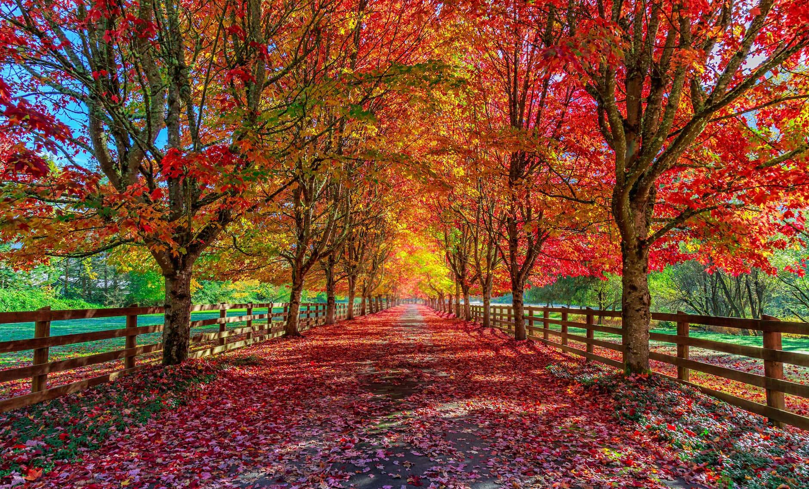

Autumn, also known as fall in American English and Canadian English, is one of the four temperate seasons. Outside the tropics, autumn marks the transition from summer to winter, in September (Northern Hemisphere) or March (Southern Hemisphere), when the duration of daylight becomes noticeably shorter and the temperature cools considerably. One of its main features in temperate climates is the shedding of leaves from deciduous trees.